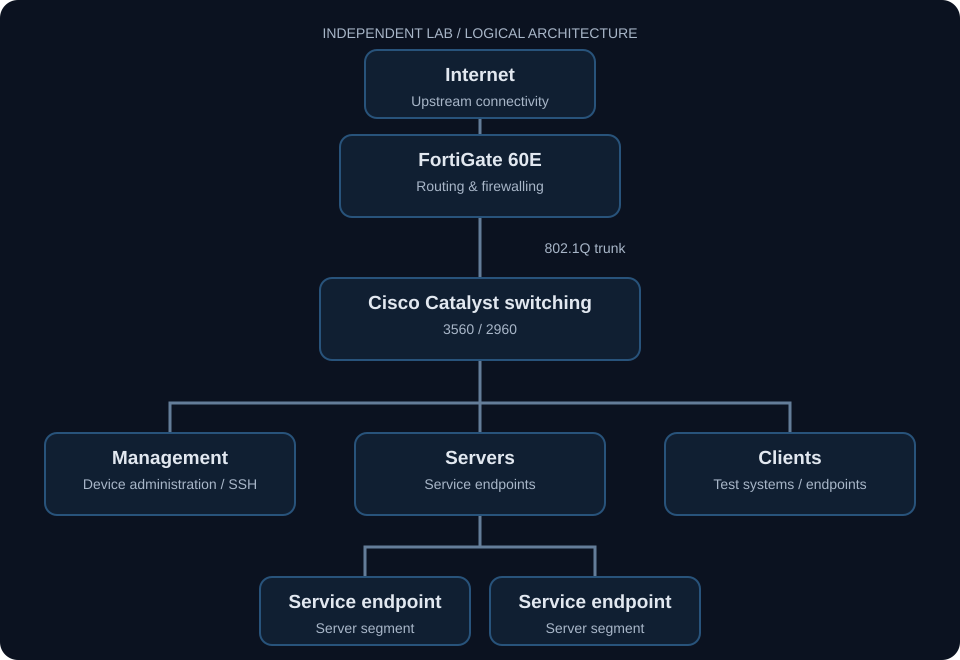

Contribution and supporting artifacts
This is my independent network learning lab. Configuration and troubleshooting work are distinct from a claim that every proposed isolation or failure test has been completed.

Build a network I can operate and explain.
The goal was to create a controlled environment for practicing enterprise networking beyond isolated configuration exercises: physical switching, firewalling, network services, and virtual workloads working together.
My role: I configured the Cisco switches and FortiGate firewall, created functional network segments, validated connected endpoints, and documented the logical architecture and troubleshooting approach.
Scope: An independent learning lab using a FortiGate 60E, Cisco Catalyst 3560 and 2960 switches. This case study describes lab implementation; it does not claim a production deployment or business performance improvement.
Physical and virtual infrastructure.
Segmented by function.
The public diagram shows the logical structure of the environment without publishing exact addressing, VLAN identifiers, firewall rules, hostnames, or management endpoints.

Separate functions. Trace dependencies.
Working in the lab today.
Currently building and testing.
Next capabilities on the roadmap.
Trace the failure through the network.
The workflow below describes my troubleshooting approach rather than a specific resolved incident. Troubleshooting starts by establishing what should be happening, identifying where actual behavior diverges from that expectation, and then narrowing the problem using device state and traffic-path evidence.
A working network isn't the finish line.
Building the environment reinforces that reliable infrastructure depends on more than basic connectivity. Segmentation, routing, documentation, management access, service dependencies, firewall behavior, and virtualization all affect how easy a network is to operate and troubleshoot.
The lab continues to evolve as I add new technologies, create controlled failures, and validate how changes affect the overall environment.
← Return to PortfolioThe network supports the services.
This page covers traffic paths and network controls. The infrastructure case study documents the separate hosts providing jump access, storage, VPN, and local AI.
Explore workload placement & administration →